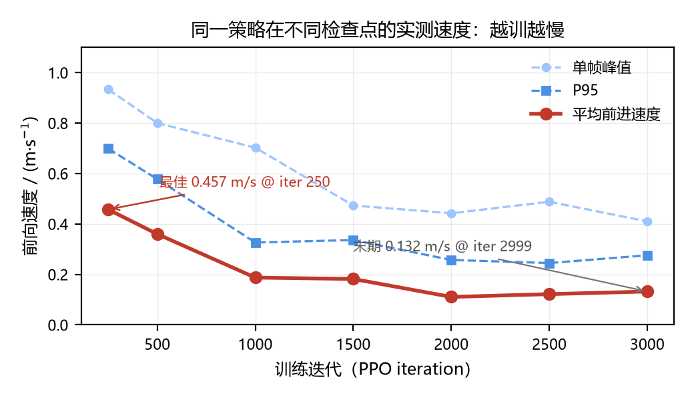
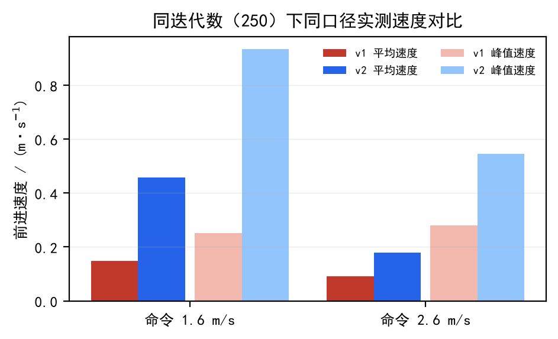

口径纪律
不做跨口径比较
社区公开 2.07 m/s（4090D / 512 环境 / 13500 轮 / 瞬时读数）与本项目 0.4572 m/s（32 env × 1200 步 / 命令锁 1.6 m/s / 平均速度）不是同一个测量，本项目未复现 2.07 m/s。此外「自行训练」与「官方权重复现」两部分数字不能混着比。
回合奖励 16.8 对应实测速度仅 0.132 m/s ——
mean_reward 不能当性能指标。短跑策略自训 PPO、Datawhale 8 本 Notebook 复现、Task8 视觉语言导航控制层优化、双栏论文稿与写作知识库。362 个文件、144.29 MB，全部实测数据可复核。
不是 A 赛道比赛成绩这一页是能力佐证与技术储备，不是比赛策略，也不是官方计分结果。
社区公开 2.07 m/s（4090D / 512 环境 / 13500 轮 / 瞬时读数）与本项目 0.4572 m/s（32 env × 1200 步 / 命令锁 1.6 m/s / 平均速度）不是同一个测量，本项目未复现 2.07 m/s。此外「自行训练」与「官方权重复现」两部分数字不能混着比。
mean_reward 不能当性能指标。训练与评测在 DGX Spark（GB10 / aarch64 / CUDA 13.0）上用 MuJoCo Warp 完成；Task7 因无 RDK X5 硬件，记录为 bpu: not_run_no_board。Task8 三场景在最优组下仍然全部没有走到目标，残余 0.783–1.651 m。
32 环境 × 1200 步、命令锁 1.6 m/s、丢前 100 步暖机。字段见 data/*.json。
| 配方 / 检查点 | 命令 | 平均 | 中位 | P95 | 单帧峰值 |
|---|---|---|---|---|---|
| Sprint v1（奖励失衡） | 1.6 | 0.1481 | 0.1539 | 0.2058 | 0.2507 |
| Sprint v2 · model_250 | 1.6 | 0.4572 | 0.4560 | 0.6988 | 0.9335 |
| Sprint v2 · 命令 2.6（超课程上限） | 2.6 | 0.1797 | 0.1780 | 0.3264 | 0.5457 |
| Sprint v2 · model_2999 | 1.6 | 0.1321 | 0.1215 | 0.2756 | 0.4103 |
偏航跟踪误差 error_vel_yaw 0.053 → 0.712（13 倍）。策略后期学会的是「原地小幅扭动 + 高频腾空」。最佳检查点在 40 分钟左右，必须做事中评测。


官方权重，不训练、不连板。10 本 notebook（00–09）全部执行过，15 份验收 JSON + 10 份运行日志可查。
| Task | 机制 | 硬指标 | 必须说清的坑 |
|---|---|---|---|
| 1 篮球平衡 | PPO + LSTM，61 维 → 14 关节 | 1500 步 / 30 s，0 重置，parity 1.19e-6 | 官方权重，不是重训 |
| 2 浏览器扰动 | xfrc_applied 真实施力 | 63 MB / 48 文件，Pull 200 N/m，48.8 s | 定性 smoke test |
| 3 高跷 / 4 摆动 | 换腿长 = 换任务 / 自激摆动 | 9/9 单元格通过 | 日志 Invalid choice，任务未注册 |
| 5 球平衡 FastSAC | off-policy + 54 维观测 | 900 步，推理 4.16 ms 均值 | 59 次失败重置（约每 15 步摔一次） |
| 6 梯面攀爬 | climber → getup 双策略交接 | 992.1 s，climber 调用 1500 次 | getup 调用 0 次，只跑了一套 |
| 7 RDK X5 / BPU | ONNX → HBM | not_run_no_board | 无硬件，板端未做 |
| 8 LightNav-0 | 图 + 词 → 10×3 轨迹 → MPC → 14 关节 | 三场全 model_stop | 残余 1.866 / 1.171 / 1.218 m，全部没走到 |
视频托管在仓库与 Gitee，不占用展示站体积；点击播放或下载。若浏览器不自动播放，请用下载链接。
362 文件 / 144.29 MB，逐文件 SHA-256 清单可核对。